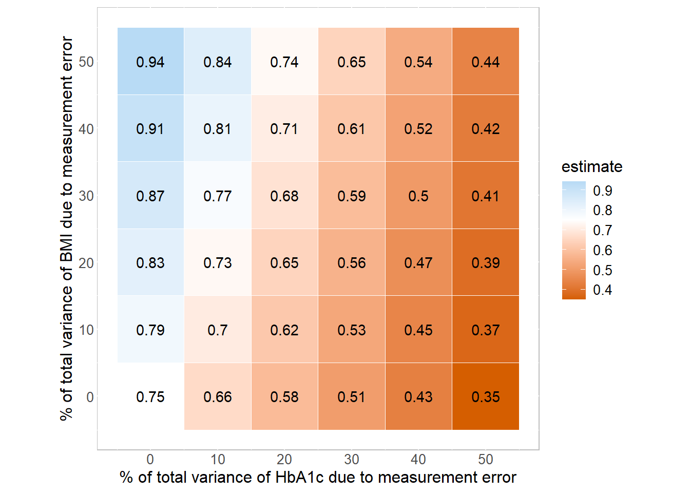

read_nhanes <- function(filename) {
# Go up one level from docs/ and find the file in data/.
path <- file.path("../data", filename)
# Read the SAS transport file and lowercase column names for the merge.
data <- haven::read_xpt(path, .name_repair = tolower)
# Return a standard R data frame.
as.data.frame(data)
}
# Import the five NHANES files.
demographics <- read_nhanes("DEMO_I.Xpt") # Age and sex
blood_pressure <- read_nhanes("BPX_I.Xpt") # Blood pressure
body_measures <- read_nhanes("BMX_I.Xpt") # Body measurements, including BMI
glycohemoglobin <- read_nhanes("GHB_I.Xpt") # HbA1c
cholesterol <- read_nhanes("TCHOL_I.Xpt") # Total cholesterolReplication of the Boulesteix et al. Simulation Study
Introduction
Introduction to the paper
This script represents an enhanced reproducible framework for the coding parts of the study “Introduction to statistical simulations in health research” by Boulesteix et al. (2020). The original study measures how measurement error in HbA1c (hemoglobin A1c) and BMI (Body Mass Index) affects the estimated association between HbA1c and systolic blood pressure. Using the same participants, the authors added random error to HbA1c and BMI at six levels, ranging from 0% to 50% of the total variance per variable.There were 36 six different combinations of error levels (conditions) in total, and the authors refitted the reference regression 1000 times per condition. Finally, they compared the average HbA1c coefficient with the reference regression.
Improvements made
The following code pipeline provides a more structured way to present the code of the study, with improvements made in various domains:
- Used descriptive names for data objects
- Used code annotations
- Enhanced structure by putting the different blocks of the code into labelled Quarto chunks
- Created helper function scripts (we moved the measurement-error simulation into a helper function using a separate R script)
- Enhanced the import of the data through relative paths
- Reduced package dependencies (e.g. replacing mice::cc() with base R complete.cases()).
- Used targeted storage locations to export the simulation figures each time it renders.
- Used renv to facilitate analysis environment
Methods
The analysis used data from the 2015–2016 NHANES survey (National Center for Health Statistics, n.d.). The analysis was conducted in R version 4.6.1 (R Core Team, 2026).
Data Import
Analysis Sample
# Select participant ID, sex, age, and the first systolic blood pressure
# reading. Merge the two files by participant ID (seqn).
d <- merge(
demographics[c("seqn", "riagendr", "ridageyr")],
blood_pressure[c("seqn", "bpxsy1")],
by = "seqn"
)
# Add BMI, HbA1c, and total cholesterol. Each merge keeps participants
# whose IDs appear in both tables, matching the original script.
d <- merge(d, body_measures[c("seqn", "bmxbmi")], by = "seqn")
d <- merge(d, glycohemoglobin[c("seqn", "lbxgh")], by = "seqn")
d <- merge(d, cholesterol[c("seqn", "lbdtcsi")], by = "seqn")
# Create columns with shorter names for the regression models (cholesterol not used here)
d$age <- d$ridageyr
d$sex <- d$riagendr
d$bp <- d$bpxsy1
d$bmi <- d$bmxbmi
d$HbA1C <- d$lbxgh
# Mark participants younger than 18 for exclusion in the next step.
d$age[d$age < 18] <- NAComplete-Case Analysis Sample
# Select the five variables used in the BMI-adjusted model.
analysis_variables <- d[c("age", "sex", "bmi", "HbA1C", "bp")]
# Keep rows with observed values for all five variables.
dc <- analysis_variables[complete.cases(analysis_variables), ]Reference models
model_without_bmi <- lm(bp ~ HbA1C + age + as.factor(sex), data = dc)
model_with_bmi <- lm(bp ~ HbA1C + bmi + age + as.factor(sex), data = dc) #this is primarily used below
ref <- coef(model_with_bmi)[["HbA1C"]] #HbA1c coefficient before adding measurement errorMeasurement-error simulation
# Test six levels of measurement error, from 0% to 50%.
error_fractions <- seq(0, 0.5, by = 0.1)
# Pair every HbA1c error level with every BMI error level.
# Six levels for each variable give 6 × 6 = 36 scenarios.
scenarios <- expand.grid(
exposure_error = error_fractions, # HbA1c
confounder_error = error_fractions # BMI
)
# Repeat the full set of scenarios 1,000 times on the complete-case sample.
n_sim <- 1000L
# Save the estimated HbA1c coefficient from each simulated regression.
beta_hat <- simulate_measurement_error(dc, scenarios, n_sim)Results
Regression estimates before adding measurement error
summary(model_without_bmi)
Call:
lm(formula = bp ~ HbA1C + age + as.factor(sex), data = dc)
Residuals:
Min 1Q Median 3Q Max
-49.887 -10.509 -1.378 8.491 107.583
Coefficients:
Estimate Std. Error t value Pr(>|t|)
(Intercept) 98.75149 1.21418 81.332 < 2e-16 ***
HbA1C 1.12638 0.20291 5.551 2.98e-08 ***
age 0.44486 0.01284 34.648 < 2e-16 ***
as.factor(sex)2 -3.24792 0.45164 -7.191 7.34e-13 ***
---
Signif. codes: 0 '***' 0.001 '**' 0.01 '*' 0.05 '.' 0.1 ' ' 1
Residual standard error: 16.1 on 5088 degrees of freedom
Multiple R-squared: 0.2305, Adjusted R-squared: 0.23
F-statistic: 508 on 3 and 5088 DF, p-value: < 2.2e-16confint(model_without_bmi) 2.5 % 97.5 %
(Intercept) 96.3711755 101.1317982
HbA1C 0.7285836 1.5241825
age 0.4196932 0.4700355
as.factor(sex)2 -4.1333281 -2.3625106summary(model_with_bmi)
Call:
lm(formula = bp ~ HbA1C + bmi + age + as.factor(sex), data = dc)
Residuals:
Min 1Q Median 3Q Max
-51.068 -10.251 -1.504 8.264 107.410
Coefficients:
Estimate Std. Error t value Pr(>|t|)
(Intercept) 92.65583 1.39320 66.506 < 2e-16 ***
HbA1C 0.75177 0.20596 3.650 0.000265 ***
bmi 0.28632 0.03282 8.724 < 2e-16 ***
age 0.44586 0.01275 34.979 < 2e-16 ***
as.factor(sex)2 -3.63115 0.45049 -8.060 9.4e-16 ***
---
Signif. codes: 0 '***' 0.001 '**' 0.01 '*' 0.05 '.' 0.1 ' ' 1
Residual standard error: 15.98 on 5087 degrees of freedom
Multiple R-squared: 0.2418, Adjusted R-squared: 0.2412
F-statistic: 405.7 on 4 and 5087 DF, p-value: < 2.2e-16confint(model_with_bmi) 2.5 % 97.5 %
(Intercept) 89.9245592 95.3871089
HbA1C 0.3479966 1.1555348
bmi 0.2219815 0.3506673
age 0.4208695 0.4708464
as.factor(sex)2 -4.5143014 -2.7479929Mean HbA1c coefficients by scenario
# Create one row per scenario. Convert error fractions to percentages
# and average the HbA1c coefficients across the 1,000 repetitions.
scenario_results <- data.frame(
me_exp = 100 * scenarios$exposure_error,
me_conf = 100 * scenarios$confounder_error,
estimate = colMeans(beta_hat)
)
# Plot HbA1c error on the x-axis and BMI error on the y-axis.
FIGURE <- ggplot(scenario_results, aes(me_exp, me_conf)) +
geom_tile(aes(fill = estimate), color = "white") +
geom_text(aes(label = round(estimate, 2))) +
# Orange indicates estimates below ref, and blue indicates estimates above it.
scale_fill_gradient2(
low = "#D55E00", mid = "white", high = "#56B4E9", midpoint = ref
) +
# Label the axes and show a tick label for each simulated error level.
labs(
x = "% of total variance of HbA1c due to measurement error",
y = "% of total variance of BMI due to measurement error"
) +
coord_equal() +
#we changed the code here so each variable gets its own tick(x-axis; HbA1c error, y-axis; BMI error). The original takes the HbA1c error levels for both axis which can be risky if the error levels change.
scale_y_continuous(breaks = unique(scenario_results$me_conf)) +
scale_x_continuous(breaks = unique(scenario_results$me_exp)) +
# Set the panel, axis, and legend appearance.
theme(
panel.background = element_rect(fill = "white", colour = "grey"),
plot.title = element_text(hjust = 0),
axis.ticks = element_blank(),
axis.title = element_text(size = 12),
axis.text = element_text(size = 10),
legend.title = element_text(size = 12),
legend.text = element_text(size = 10)
)
FIGURE
#We save in the results folder (each time the code regenerates the figure)
dir.create("../results/figures", recursive = TRUE, showWarnings = FALSE)
ggplot2::ggsave(
filename = "../results/figures/Figure_STRATOS.tif",
plot = FIGURE,
width = 8,
height = 7,
units = "in",
dpi = 300
)
Discussion
We see that the heatmap was replicated reflecting HbA1c coefficient changes across different combinations of measurement error levels. The reference regression output also closely matched the output as reported in the original paper; When adjusting for age and gender the estimated regression coefficient for HbA1c was 1.13mmHg, 95% CI[0.73,1.52]. In addition, when also adjusting for BMI, the estimated regression coefficient for HbA1c was 0.75mmHg, 95% CI [0.35, 1.16].
From the heatmap we notice that in the absence of measurement error for both BMI and HbA1c, then the coefficient was 0.75 (similar to the reference regression). We also noticed partial offset of each other errors in some cases; When the measurement error accounted for 20% of the total variance in HbA1c and 50% of the total variance in BMI, the coefficient reached 0.74 which is close to the reference model.Confidence interval coverage was not evaluated in this implementation.
References
Boulesteix, A.-L., Groenwold, R. H. H., Abrahamowicz, M., Binder, H., Briel, M., Hornung, R., Morris, T. P., Rahnenführer, J., Sauerbrei, W., & STRATOS Simulation Panel. (2020). Introduction to statistical simulations in health research. BMJ Open, 10(12), e039921. https://doi.org/10.1136/bmjopen-2020-039921
National Center for Health Statistics. (n.d.). NHANES 2015–2016. Centers for Disease Control and Prevention. Retrieved https://wwwn.cdc.gov/Nchs/Nhanes/ContinuousNhanes/Default.aspx?BeginYear=2015
R Core Team. (2026). R: A language and environment for statistical computing [Computer Software]. R Foundation for Statistical Computing. https://doi.org/10.32614/R.manuals